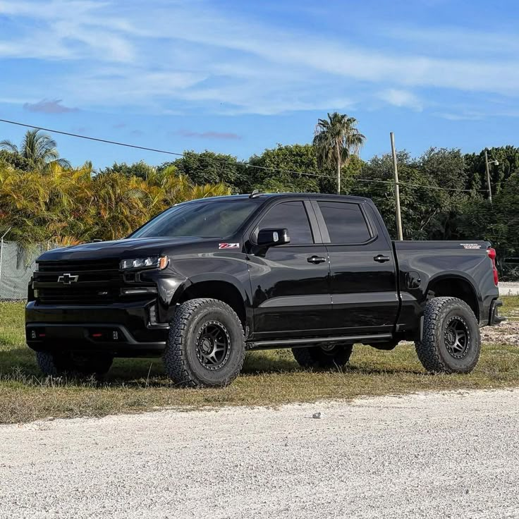
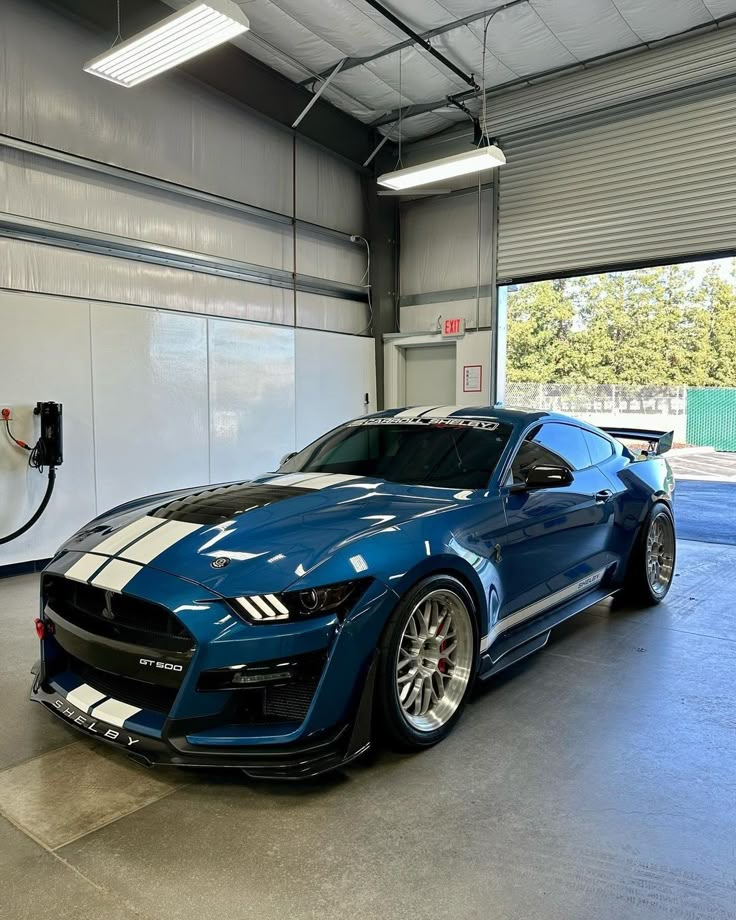

My favorite cars:
| Car | Why it's my favorite |
|---|---|
 |
The BMW M5 is a Bi-trubo V8. I like how the BMW M5 is a full sized sedan muscle car across all generations of it. More specifically, the BMW F90 M5 is my favorite M5. It comes with over 600hp from factory and can easily compete with similar cars in its category. |
|

|
I've always liked trucks. Riding up high, typically capable of withstanding more damage than a car, and the rumble of a V8 always made trucks attractive to me. I want the Silverado specificially because its probably the most reliable out of Ford, and Ram, they look good, and can get an older one for a decent price if you look hard enough. If I was to ever be in a truck towing, or driving around my friends, I'd want it to be a black silverado. |
|

|
I've always liked mustangs. If you dont get a mopar, camaro, or corvette, you go Mustang. |